Lab 3 - Simple Visuals
Overview
For this lab, we are going to go over how to summarize data visually using a few simple graphs. We will be using data from the National Health Interview Survey - a nationally representative, cross-sectional survey collected every year by the National Institutes of Health. I have created a dataset for this lab using data from 2018, 2019, 2022, and 2023 to allow us to explore recent health trends and some differences before and after the pandemic. Here, we are going to answer a handful of questions:
- What does the distribution of sexual orientation look like in the U.S. and has it changed over time?
- Do indicators of physical and mental health look different before and after the pandemic?
- Has there been a change in related behaviors, like flu vaccine take-up rates?
In the dataset found here, I have captured some general demographic information, employment status information, educational attainment, and then some health and health insurance indicators.
Let’s start our .do file with our usual starting sequence. Download the data, move it to your data subfolder (but don’t open it!), open a new do file in Stata and type:
cd "C:\rpad504\"
use "data\nhis_00004.dta"
local today : di %tdCY.N.D date("$S_DATE","DMY")
log using "logs/lab3_`today'.log", replaceMake sure the path in the first line points to your class folder, highlight all four lines, and hit execute. Now we’re ready to go!
Proportions
Cleaning the data
We will start with a few different ways to look at the distribution of sexual orientation. Why? Well, recall that this is survey data that is self-reported. Shares of the population that are willing to self-report their sexual orientation may change over time alongside broader social norms around tolerance and acceptance of different orientations. We will look at the data to see if that pattern seems to show up even in this small window of data (a five year period between 2018 and 2023). But we are also looking at this first because it provides a simple example of describing a categorical variable. Recall that in making tables, we are generally not interested in describing the mean of a categorical variable because it’s not particularly meaningful. Instead, we want to see how observations are distributed across categories of the variable (or, put more directly, the distribution of the variable). The same is true for visualizing data.
Before we begin analyzing the data, we want to make sure we understand what the variable looks like and whether it needs to be cleaned at all. Let’s start by running our trusty fre command and look at the categories of the variable.
fre sexorienAfter which, we should see…
sexorien -- sexual orientation
---------------------------------------------------------------------------------------------
| Freq. Percent Valid Cum.
------------------------------------------------+--------------------------------------------
Valid 0 niu | 71763 38.51 38.51 38.51
1 lesbian or gay | 2075 1.11 1.11 39.62
2 straight, that is, not lesbian or gay | 104866 56.27 56.27 95.90
3 bisexual | 1863 1.00 1.00 96.90
4 something else | 600 0.32 0.32 97.22
5 i don't know the answer | 925 0.50 0.50 97.72
7 unknown-refused | 780 0.42 0.42 98.13
8 unknown-not ascertained | 3478 1.87 1.87 100.00
Total | 186350 100.00 100.00
---------------------------------------------------------------------------------------------Note that there’s some values that we don’t really want to include in our analysis. Categories like “Unknown” and “NIU” are generally going to be treated as “missing” in our analysis because either the respondents weren’t asked that question (niu, or “not in universe”) or refused to respond for whatever reason (both “unknown” categories). For our purposes, we really don’t know their orientation and so will simply exclude them from our description for now by treating them as missing. Let’s use our recode command to create a new variable that sets those categories to missing and relables the existing categories more cleanly.
recode sexorien (0 7/8 = .a) (1 = 1 "Lesbian or gay") (2 = 2 "Straight") (3 = 3 "Bisexual") (4 = 4 "Something else") (5 = 5 "I don't know"), gen(orientation)
label var orientation "Sexual orientation"Notice that I also went ahead and relabeled the new variable so that I have a nice, clean label for future figures and tables.
Pie charts
We’ll start with my least favorite way of displaying data and perhaps the way you encounter data quite often in reports: the pie graph. The pie graph provides a circle that represents all observations in a sample and divides the circle into slices that reflect the proportion of observations in different categories of a categorical variable. Let’s look at sexual orientation.
graph pie, over(orientation)
graph export "output\orientation_pie.png", as(png) replace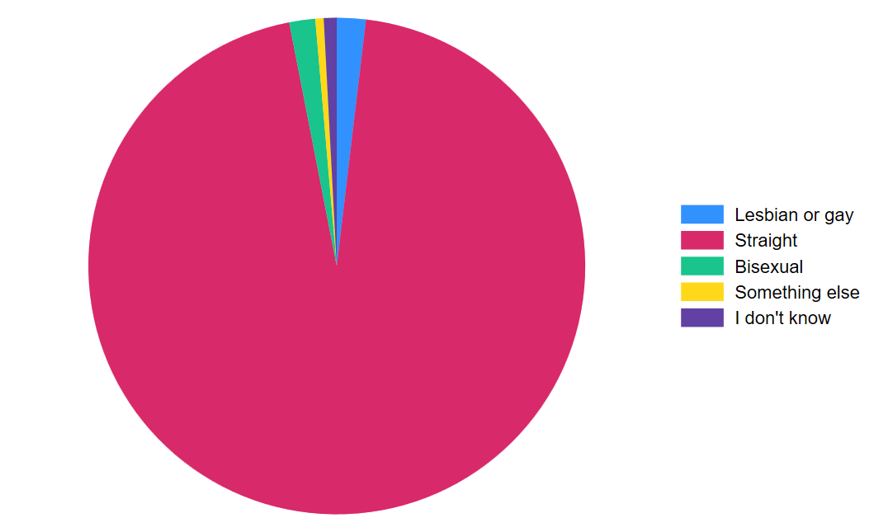
Let’s add a title so our readers know what they’re looking at in this chart.
graph pie, over(orientation) title("Sexual orientation in USA, 2018-2019 and 2022-2023")
graph export "output\orientation_pie.png", as(png) replace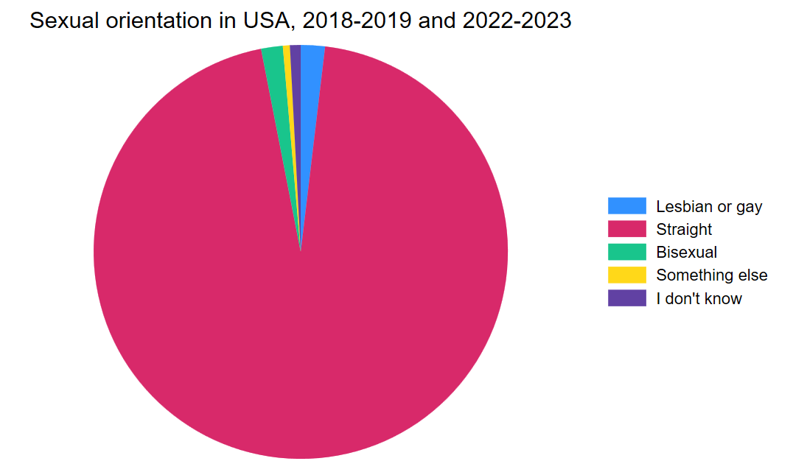
Bar graphs
Alright, as I said, I don’t really like pie charts. There are very few instances where I find a pie chart more clear to read than a bar chart. Worse, pie charts are less flexible for comparisons over time or across two different variables. So, let’s start with a simple bar chart of the same variable.
graph bar, over(orientation) title("Sexual orientation in USA, 2018-2019 and 2022-2023")
graph export "output\orientation_bar.png", as(png) replace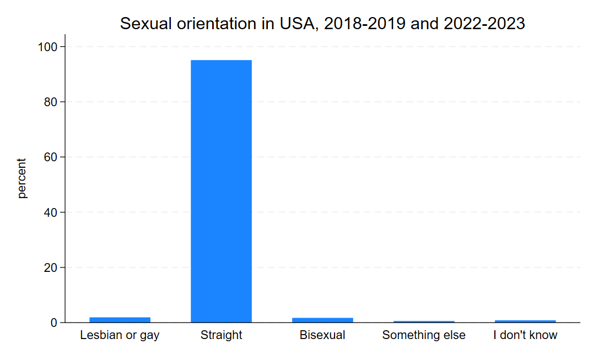
Notice that the code is very similar. Here, we are telling Stata to create a bar graph and to plot the proportion of responses over the categories in the variable orientation, which we created earlier. The flexibility here is we can also add other variables to the graph, such as the earnings or BMI or any other continuous variable, to look at the average of that variable over each of the categories in orientation as well. But for now, we are interested in looking at the distribution in sexual orientation over time. Now, looking at bar graphs for four years might be a little overwhelming, so let’s look at a bar graph for just two years: 2018 and 2023. Let’s start by creating a simple variable that only includes 2018 and 2023.
gen twoyear = 2018 if year == 2018
replace twoyear = 2023 if year == 2023Now we can use that new variable and the by option to tell Stata to make a bar graph over the categories of orientation and separately by the values in twoyear. I’m also going to add an option - asyvars - to use different colors for each category of orientation so that comparison across years is a little easier on the eyes.
graph bar, over(orientation) by(twoyear) asyvars
graph export "output\orientation_bar2.png", as(png) replace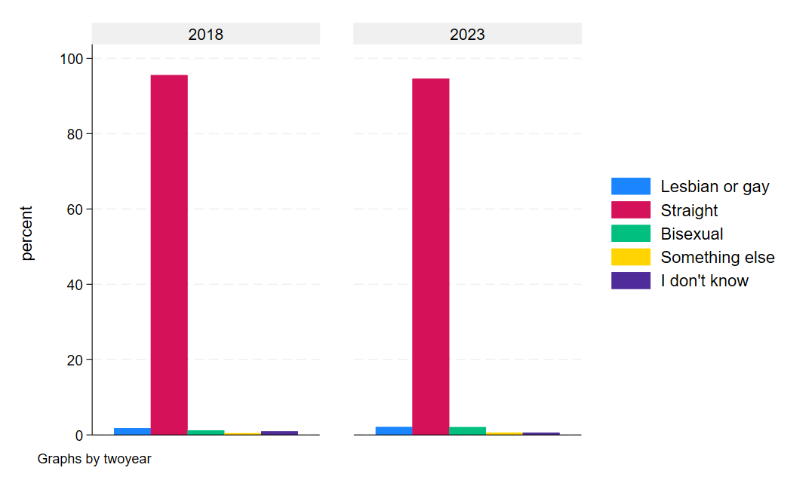
If we squint, we can sort of see an uptick the non-straight categories, suggesting at least some marginal additional willingness to self-report sexual orientation.
Horizontal bar graphs
Conventional bar graphs, like the ones we just made, often have the bars running vertically. There are a few drawbacks to this orientation, however. First, pages are often longer than they are wide - both in their digital presentation online and in their printed form on paper. Practically, this means we have more space constraints in how much information we can present at once in the bar graph. Second, and related, the labels on the x-axis begin to face severe trade-offs between clarity in the label and the space available for a legible label. Longer, more precise labels of variables in our graph will begin to overlap with other variable labels, leaving our graph an illegible mess. We can do things like shortening our labels or angling our labels to a 45 degree angle, but the former has limits and the latter distorts our graphs space and makes reading the labels less natural.
A quick example:
graph bar, over(orientation, label(angle(45))) title("Sexual orientation in USA, 2018-2019 and 2022-2023")
graph export "output\orientation_bar3.png", as(png) replaceNotice, in the code, I added an option to the presentation of orientation in the graph line of the code (, label(angle(45)))). This tells Stata to tilt the labels of the variable 45 degrees. It can be a quick fix to long labels, but…
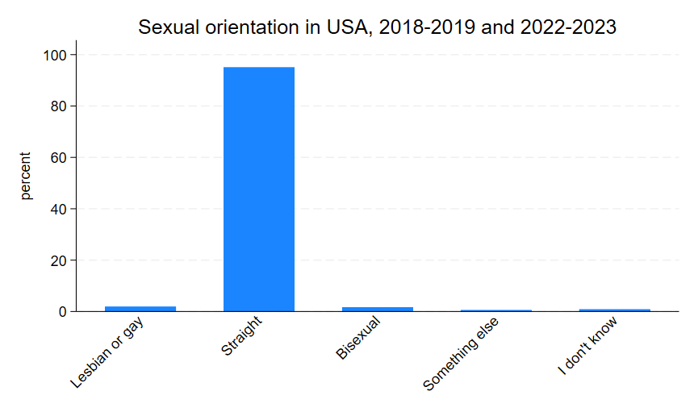
notice that the graph area shrank a bit. You can imagine that even longer labels will distort the graph further. And, again, it’s not really natural to read at a 45 degree angle and our purpose in data visualization is to make things easier on readers, not more challenging.
Fortunately, there’s a pretty easy alternative: horizontal bar graphs. Horizontal bar graphs allow our graph to expand down the length of the page rather than rellying on the width, giving us more real estate to work with. They also re-orient our graph to the y-axis, allowing us to use slightly more specific labels if we wanted while still keeping them in a natural reading orientation. In Stata, the starting point for a horizontal bar graph is as simple as adding an h to our code:
graph hbar, over(orientation) title("Sexual orientation in USA, 2018-2019 and 2022-2023")
graph export "output\orientation_bar4.png", as(png) replaceNotice that in the code above, I simply replaced bar with hbar (and I also dropped the now unnecessary angle option). This gives us a graph that looks like this:
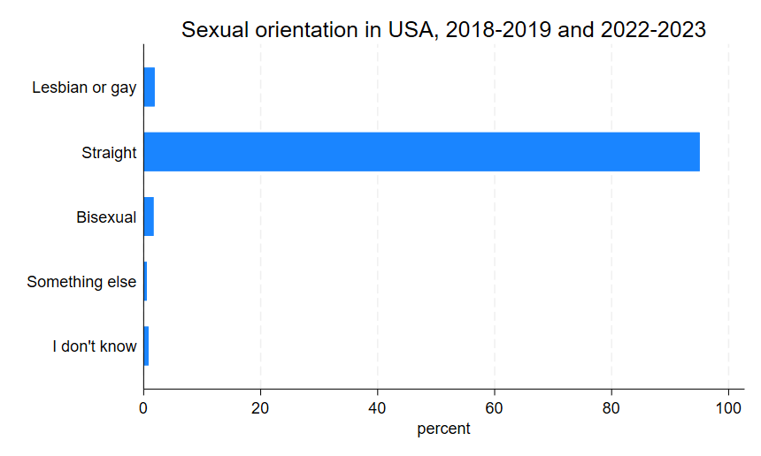
In many cases, the horizontal bar graph is the better option, but that is partly subject to context and partly subject to taste, so it’s good to know how to work with both presentations of data.
Pre-Post Comparisons
Now we can move on to question 2, which deals with indicators of physical and mental health before and after the pandemic. For this, we are going to use days of work lost to health issues, self-reported health status, and the frequency of feeling depressed. Let’s start by looking at the categorical variables of health status and frequency of feeling depressed.
fre health
fre depfreqWhich will look something like this:
health -- health status
--------------------------------------------------------------------------
| Freq. Percent Valid Cum.
-----------------------------+--------------------------------------------
Valid 1 excellent | 59916 32.15 32.15 32.15
2 very good | 58186 31.22 31.22 63.38
3 good | 45864 24.61 24.61 87.99
4 fair | 17053 9.15 9.15 97.14
5 poor | 5194 2.79 2.79 99.93
7 unknown-refused | 89 0.05 0.05 99.97
9 unknown-don't know | 48 0.03 0.03 100.00
Total | 186350 100.00 100.00
--------------------------------------------------------------------------
health -- health status
--------------------------------------------------------------------------
| Freq. Percent Valid Cum.
-----------------------------+--------------------------------------------
Valid 1 excellent | 59916 32.15 32.15 32.15
2 very good | 58186 31.22 31.22 63.38
3 good | 45864 24.61 24.61 87.99
4 fair | 17053 9.15 9.15 97.14
5 poor | 5194 2.79 2.79 99.93
7 unknown-refused | 89 0.05 0.05 99.97
9 unknown-don't know | 48 0.03 0.03 100.00
Total | 186350 100.00 100.00
--------------------------------------------------------------------------
depfreq -- how often feel depressed
-------------------------------------------------------------------------------
| Freq. Percent Valid Cum.
----------------------------------+--------------------------------------------
Valid 0 niu | 53813 28.88 28.88 28.88
1 daily | 5283 2.83 2.83 31.71
2 weekly | 7454 4.00 4.00 35.71
3 monthly | 9118 4.89 4.89 40.61
4 a few times a year | 34401 18.46 18.46 59.07
5 never | 73370 39.37 39.37 98.44
7 unknown-refused | 280 0.15 0.15 98.59
8 unknown-not ascertained | 2231 1.20 1.20 99.79
9 unknown-don't know | 400 0.21 0.21 100.00
Total | 186350 100.00 100.00
-------------------------------------------------------------------------------Again we can see that both variables need some cleaning to collapse categories into things that are missing and not missing. Let’s go ahead and do that now.
recode health (7/9 = .a) (1 = 1 "Excellent") (2 = 2 "Very good") (3 = 3 "Good") (4 = 4 "Fair") (5 = 5 "Poor"), gen(health_nm)
recode depfreq (0 7/9 = .a) (1 = 1 "Daily") (2 = 2 "Weekly") (3 = 3 "Monthly") (4 = 4 "A few times/yr") (5 = 5 "Never"), gen(depfreq_nm)
recode empstat (0 220 997/999 = .a) (100/120 = 1 "Employed") (200 = 0 "Unemployed"), gen(employed)
recode wldayr (996/999 = .a), gen(wlday_nm)
gen workingage = 0
replace workingage = 1 if age <= 55 & age >= 25
label var wlday_nm "Work loss days past year"
label var employed "Employed"
label var health_nm "Health status"
label var depfreq_nm "Frequency feeling depressed"I also included the relevant recode of the continuous variable of work days lost to health issues in the last 12 months and a recode of employment status so we can focus in on prime age workers. Let’s start with the same ideas we’ve already worked with - the distribution of categorical variables in a bar graph. We can start with both health overall and frequency of feeling depressed overall.
graph bar, over(health_nm)
graph export "output\health_bar1.png", as(png) replace
graph bar, over(depfreq_nm)
graph export "output\depression_bar1.png", as(png) replaceAnd those graphs should look a little something like this:
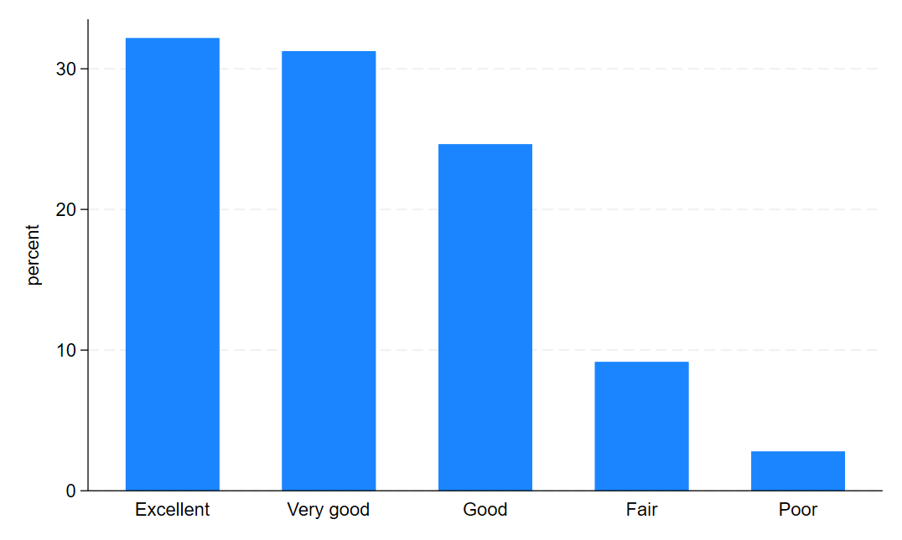
and this…
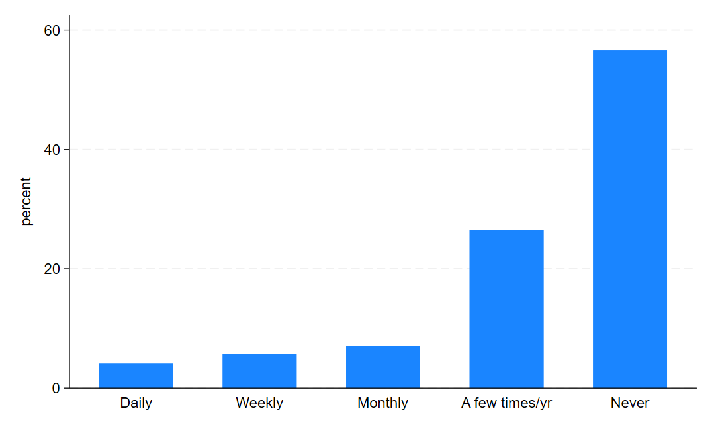
Now, let’s look at them before and after COVID. First, we need to create a variable that identifies the pre-COVID and post-COVID periods in our data.
gen post_covid = 0
replace post_covid = 1 if year >= 2020
label define covid 0 "Pre-COVID" 1 "Post-COVID"
label val post_covid covidThen we can use the same structure we used in our by year approach for sexual orientation.
graph bar, over(health_nm) by(post_covid)
graph export "output\health_bar2.png", as(png) replace
graph bar, over(depfreq_nm) by(post_covid)
graph export "output\depression_bar2.png", as(png) replace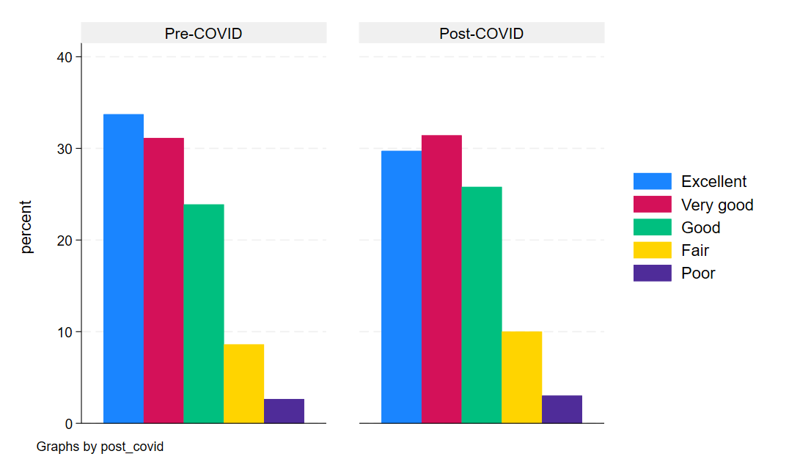
Looking at health status, we can see some marginal changes, mostly for the worse, in the post-pandemic period.
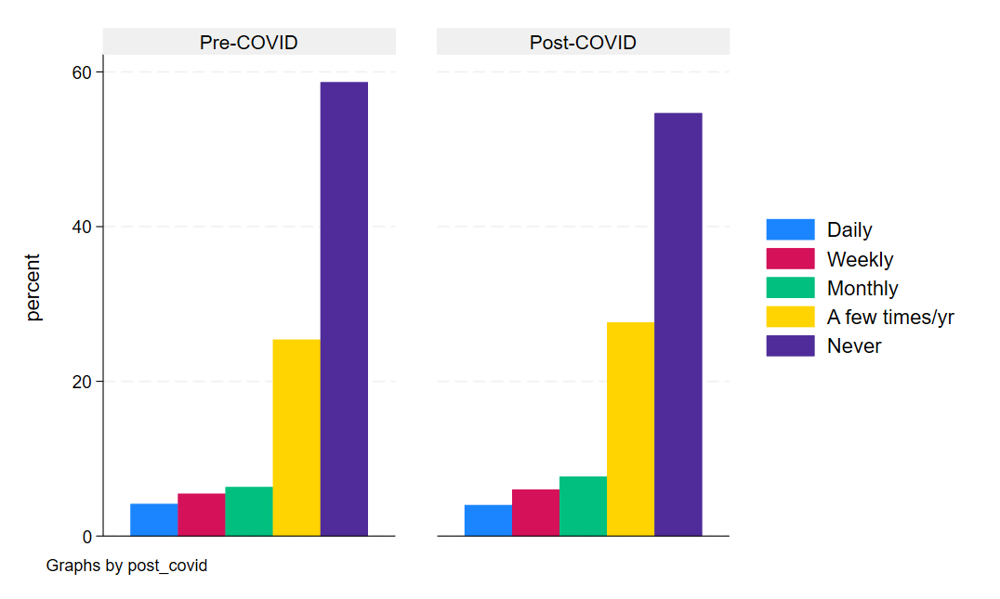
And same with depression. In general, the post bars shift leftward toward a higher proportion of Americans feeling depressed more often in the post-COVID period than the pre-period.
But what about a more concrete and continuous measure like days of work missed for health reasons? This is a count variable, which means we can look at changes in averages over time. This means, we could do two things. First, we could look at the average days of work missed by health status in the pre- and post-COVID periods. Then, we could also look at the year-to-year average number of days of work missed in our sample.
First, we’ll start with the bar graph because it’s sort of the simplest.
graph bar (mean) wlday_nm, over(health_nm) by(post_covid) asyvars
graph export "output\health_bar3.png", as(png) replaceNotice that we added a variable before the options and specified that we wanted the mean of that variable. This tells Stata to give use the conditional mean of the variable (wlday_nm) for each category in the health status variable (health_nm), separately by COVID period.
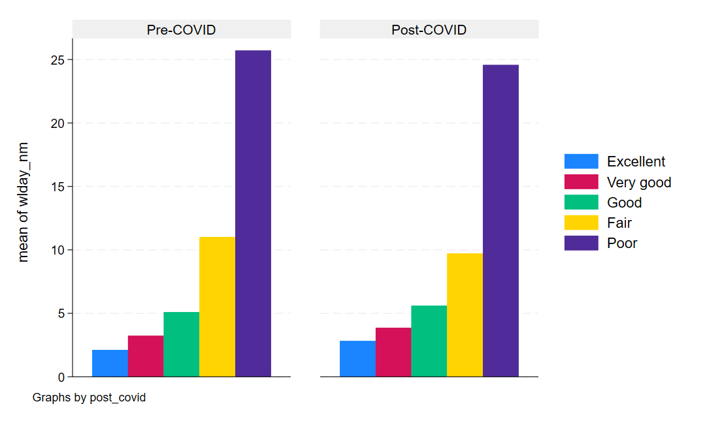
Now, let’s take advantage of the working age and employment variables we got to create a nice line graph of the aver days of work missed each year in our data. To do this, we will need to create a new variable that is equal to the sample mean for each year. But we’ll also restrict this to only include workers in the prime age working years and who report being employed. While this sounds complicated, this is quite simple in Stata and takes advantage of the egen command - a command that allows you to generate variables that are functions of other variables (in this case, a mean).
egen dayslost_mn = mean(wlday_nm) if workingage == 1 & employed == 1, by(year)
label var dayslost_mn "Avg. Days of Work Lost"In this code, I tell Stata to create a new variabel, dayslost_mn that is the mean of wlday_nm for each year in the data (the by(year) part of the code). Now we can simply plot our averages for each year in our data with a straightforward command:
twoway connected dayslost_mn year
graph export "output\dayslost_line1.png", as(png) replace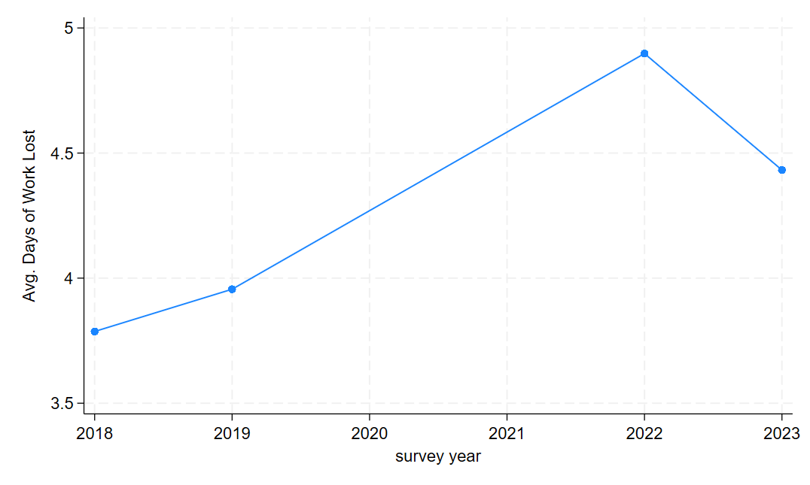
Note that the dots reflect years of actual, observed data, meaning there’s a gap of missing data in our dataset. A jump of nearly an entire additional lost day of work for health reasons on average is a pretty big jump!
Proportions over time
Single groups
Finally, we are going to look at whether a related behavioral change - taking the flu vaccine - was altered by the COVID pandemic. Perhaps more people take flu precautions from the heightened awareness brought on by exposure to a novel widespread respiratory illness.
To do this, let’s look at the flu vaccine variable to see how it’s coded.
fre vacflu12mvacflu12m -- had any flu vaccine, past 12 months
-----------------------------------------------------------------------
| Freq. Percent Valid Cum.
--------------------------+--------------------------------------------
Valid 0 niu | 39145 21.01 21.01 21.01
1 no | 71805 38.53 38.53 59.54
2 yes | 72703 39.01 39.01 98.55
7 refused | 209 0.11 0.11 98.66
8 not ascertained | 1559 0.84 0.84 99.50
9 don't know | 929 0.50 0.50 100.00
Total | 186350 100.00 100.00
-----------------------------------------------------------------------Notice that, again, we are going to need to recode. Let’s go ahead and recode it into a binary and then recode the other categories into missings.
recode vacflu12m (0 7/9 = .a) (1 = 0 "No") (2 = 1 "Yes"), gen(fluvax)
label var fluvax "Got flu vaccine in past year"Now, just like with days of work lost per week, we want averages of our binary variable by year, which will give us the annual proportion of the population that took the flu vaccine at some point during the year.
egen fluvax_mn = mean(fluvax), by(year)
label var fluvax_mn "Prc. Received Flu Vax."And now the code is the same as before.
twoway connected fluvax_mn year
graph export "output\fluvax_line1.png", as(png) replace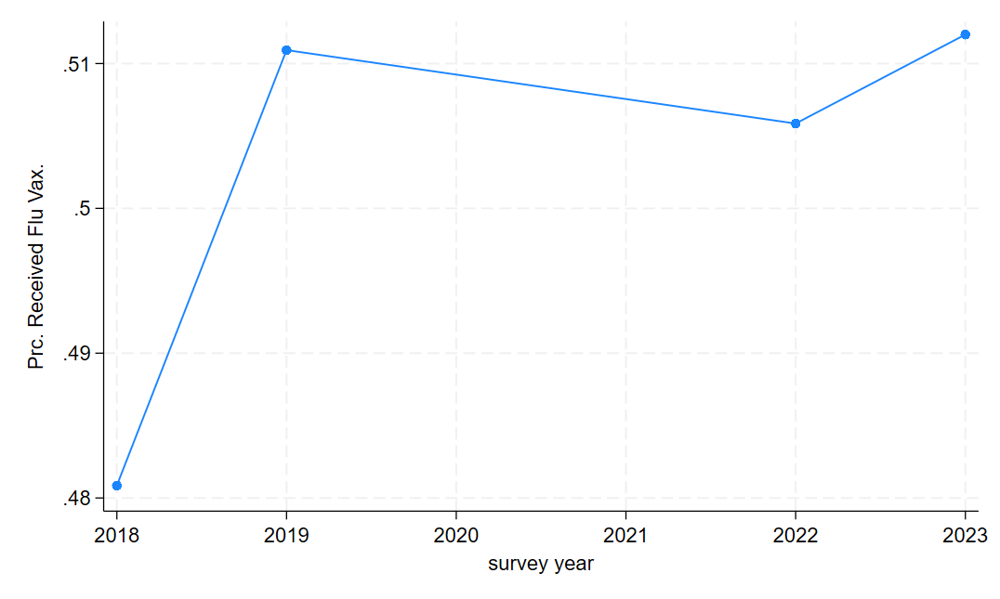
Multiple groups
Often, we aren’t just interested in one group of people or one category of data at a time. Sometimes we want to monitor trends in multiple groups or one multiple measures at once. Let’s use the categorical measures of health as an example. For this, we have a little additional data cleaning setup to do, but the process is about the same - calculating the average of each variable of interest by year and then plotting the averages. Let’s get started with the data cleaning:
tab health_nm, gen(healthcat)
egen hlth_excel_mn = mean(healthcat1), by(year)
egen hlth_vg_mn = mean(healthcat2), by(year)
egen hlth_g_mn = mean(healthcat3), by(year)
egen hlth_f_mn = mean(healthcat4), by(year)
egen hlth_p_mn = mean(healthcat5), by(year)Above, we create an indicator variable for each category of the variable health named with a stub healthcat. This gives us five indicator variables. We then use those indicators to calculate the proportion of people in each category for each year in our sample.
Remember that indicator variables function as a true/false switch that takes a value of 1 if the observation falls into the category the variable is flagging and 0 if the observation does not. For instance, if I had 3 categories of education - high school or less, some college, and college or more - there would be three indicator variables (hs, somecol, col). For people with a high school diploma or less, the variable hs would be 1 and would be 0 for all others. For people who took some college classes but never got a 4-year degree, the variable somecol would be 1 and 0 for all others. And finally, people with a 4-year degree or more, the variable col would be 1 and 0 for all others. If we know everyone’s educational attainment, everyone will have exactly one of these variables coded as 1 and the others set to 0 in their row of our dataset. Since the average of a variable is \(\overline{X} = \frac{\sum x_i}{n}\), the average of an indicator is the number of 1 values divided by the sample size. Or, put differently, the proportion of the sample in the indicator variable’s category!
Now, let’s label these variables so that they make sense in our graph:
label var hlth_excel_mn "Prc. Excellent Health"
label var hlth_vg_mn "Prc. Very Good Health"
label var hlth_g_mn "Prc. Good Health"
label var hlth_f_mn "Prc. Fair Health"
label var hlth_p_mn "Prc. Poor Health"Alright, now we are ready to graph this. The code for the graph is simple: we use the same command as before but we list all of our y-axis variables and then close with our x-axis variable.
twoway connected hlth_excel_mn hlth_vg_mn hlth_g_mn hlth_f_mn hlth_p_mn year
graph export "output\health_line1.png", as(png) replaceAnd we get a graph that looks like this:
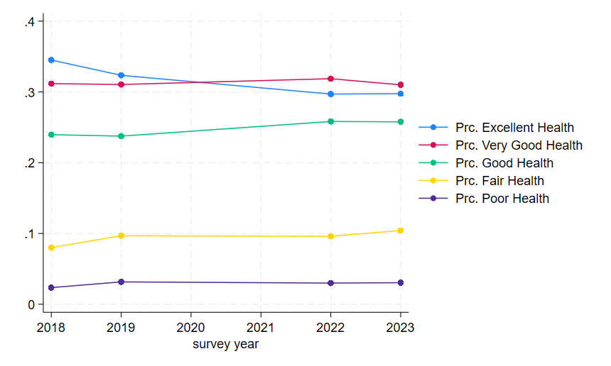
Now, because we based this on the means of indicators, our y-axis is on a 0 to 1 scale. Percents are, of course, on a 0-100 scale, and readers will find it mentally taxing to re-scale this in their minds themselves. So we might want to add an extra data cleaning step before we make our graph that scales the means appropriately because, as always, our job is to make reader’s lives easier.
gen hlth_excel_mn100 = hlth_excel_mn*100
gen hlth_vg_mn100 = hlth_vg_mn*100
gen hlth_g_mn100 = hlth_g_mn*100
gen hlth_f_mn100 = hlth_f_mn*100
gen hlth_p_mn100 = hlth_p_mn*100
label var hlth_excel_mn100 "Prc. Excellent Health"
label var hlth_vg_mn100 "Prc. Very Good Health"
label var hlth_g_mn100 "Prc. Good Health"
label var hlth_f_mn100 "Prc. Fair Health"
label var hlth_p_mn100 "Prc. Poor Health"Notice that the new variables simply multiply our original means by 100 (the * symbol in Stata is multiplication) to re-scale the variables to a 100 point scale. This will make our graph’s labels and range more intuitive to understand for most readers.
twoway connected hlth_excel_mn100 hlth_vg_mn100 hlth_g_mn100 hlth_f_mn100 hlth_p_mn100 year
graph export "output\health_line2.png", as(png) replace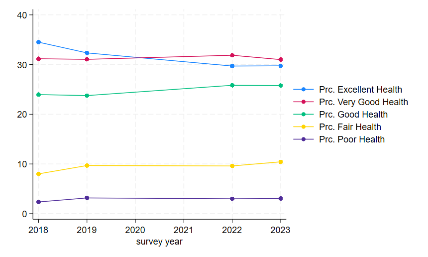
And that’s all for this lab! Let’s close our .do file with our usual log close and exit Stata.